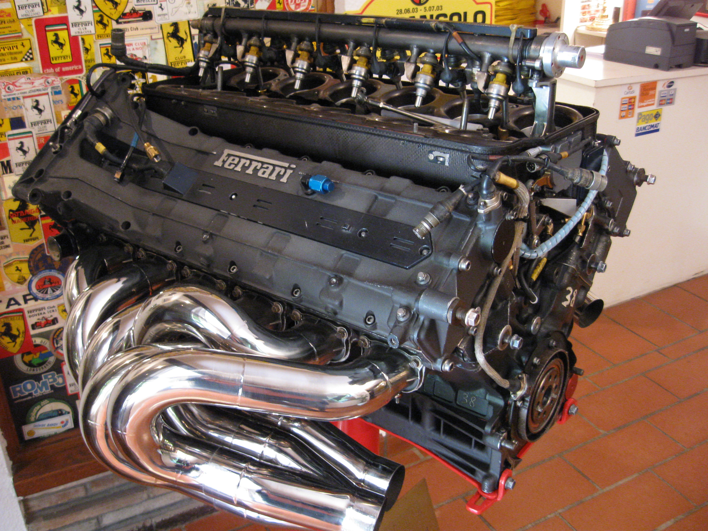

Mechanical engineering is the study of physical machines that may involve force and movement. It is an engineering branch that combines engineering physics and mathematics principles with materials science, to design, analyze, manufacture, and maintain mechanical systems.
